We are going to study related angles such as adjacent angles, linear pair of angles and vertically opposite angles.
5.2.1. Adjacent angles
The teacher shows a picture of sliced orange with angles marked on it. Read the conversation between the teacher and students. Teacher : How many angles are marked on the picture? Can you name them? Kavin : Three angles are marked on the picture. They are \(+ ,+\) and + Teacher : Which are the angles seen next to each other? Thoorigai : Angles such as +AOB and + are next to each other. Teacher : How many vertices are there? Mugil : There is only one common vertex. Teacher : How many arms are there? Name them. Amudhan : There are three arms. They are OA , and Teacher : Is there any common arm for \(\angle AOB\) and \(\angle BOC\)? Oviya : Yes. OB is the common arm for \(\angle AOB\) and \(\angle BOC\). Teacher : What can you say about the arms OA and ?
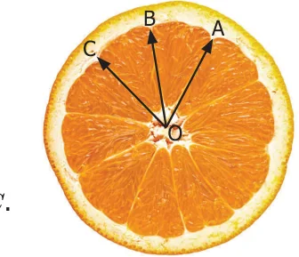
Kavin : They lie on the either side of the common arm OB . Teacher : Are the interiors of \(\angle AOB\) and \(\angle BOC\) overlapping? Mugil : No. Their interiors are not overlapping. Teacher : Hence the two angles, \(\angle AOB\) and \(\angle BOC\) have one common vertex (O), one common arm (OB ), other two arms (OA and OC ) lie on either side of the common arm and their interiors do not overlap. Such pair of angles \(\angle AOB\) and \(\angle BOC\) are called adjacent angles. So, two angles which have a common vertex and a common arm, whose interiors do not overlap are called adjacent angles. Now observe the Fig.5.2 in which angles are named \(\angle 1\), \(\angle 2\) and \(\angle 3\). It can be observed that there are two pairs of adjacent angles such as \(\angle 1\), \(\angle 2\) and \(\angle 2\), \(\angle 3\). Then what about the pair of angles \(\angle 1\) and \(\angle 3\)?
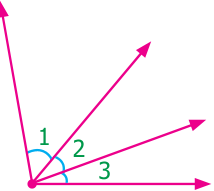
They are not adjacent because this pair of angles have a common vertex but they do not have a common arm as \(\angle 2\) is in between \(\angle 1\) and \(\angle 3\). Also interiors of \(\angle 1\) and \(\angle 3\) do not overlap. Since the pair of angles does not satisfy one among the three conditions they are not adjacent. Think In each of the following figures, observe the pair of angles that are marked as \(\angle 1\) and \(\angle 2\). Do you think that they are adjacent pairs? Justify your answer.
Try these
- 1.Few real life examples depicting adjacent angles are shown below.
Can you give three more examples of adjecent angles seen in real life?
- 2.Observe the six angles marked in the picture shown (Fig 5.2). Write any four pairs
of adjacent angles and that are not.
- 3.Identify the common arm, common vertex of the adjacent _{B} _{C} _{D} _{E}
angles and shade the interior with two colours in each of the A F following figures.
- (i)_{D} _{C} (ii) _{Q}
- 4.Name the adjacent angles in each of the following figure.
- (i)A (ii)
5.2.2 Linear pair _{S}
Observe the \(Fig.5.3 \angle QPR\) and \(\angle RPS\) are adjacent angles. It is clear that \(\angle QPR\) and \(\angle RPS\) together will make \(\angle QPS\) which is acute. When \(^{R} \angle QPR\) and \(\angle RPS\) are increased \(\angle QPS\) becomes (i) right angle,
- (ii)obtuse angle, (iii) straight angle and (iv) reflex angle as shown
in Fig.5.4. Fig.5.3
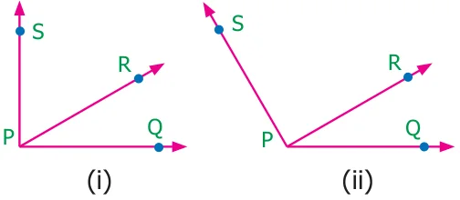
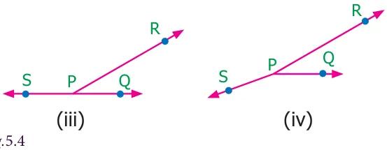
If the resultant angle is a straight angle then the angles are called supplementary angles. The adjacent angles that are supplementary lead us to a pair of angles that lie on straight line (Fig.5.4(iii)). This pair of angles are called linear pair of angles.
Try these
- 1.Observe the following pictures and find the other angle of linear pair.
\(84 ^{\circ} 84 ^{\circ}\)
Think
Observe the figure. There are two angles namely \(\angle PQR = 150 ^{\circ}\) and \(\angle QPS = 30 ^{\circ}\) . Is all this pair of supplementary \(150 ^{\circ}\) angles a linear pair? Discuss. \(^{P} 30 ^{\circ} ^{Q}\)
Example 5.1 In Fig. 5.5, find AOC. Solution \(\angle AOC = \angle AOB + \angle \angle BOC ^{B}\)
\(= 51 ^{\circ} + 46 ^{\circ} 46 ^{\circ} _{O}\)
\(= 97 ^{\circ} C Fig.5.5\)
Example 5.2 If \(\angle POQ = 23 ^{\circ}\) and \(\angle POR = 62 ^{\circ}\) then find \(\angle QOR\) Solution We know that \(\angle POR = \angle POQ + \angle QOR\)
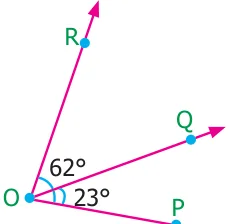
\(62 ^{\circ} = 23 ^{\circ} + \angle QOR\)
Subtracting \(23 ^{\circ}\) on both sides
\(62 ^{\circ} - 23 ^{\circ} = 23 ^{\circ} + \angle QOR - 23 ^{\circ}\)
\(\angle QOR = 39 ^{\circ}\) Fig.
Example 5.3 Which of the following pair of adjacent angles will make a linear pair?
- (i)\(89 ^{\circ}\) , \(91 ^{\circ}\) (ii) \(105 ^{\circ}\) , \(65 ^{\circ}\) (iii) \(117 ^{\circ}\) , \(62 ^{\circ}\) (iv) \(40 ^{\circ}\) , \(140 ^{\circ}\)
Solution
- (i)Since \(89 ^{\circ} + 91 ^{\circ} = 180 ^{\circ}\) , this pair will be a linear pair.
- (ii)Since \(105 ^{\circ} + 65 ^{\circ} = 170 ^{\circ} \ne 180 ^{\circ}\) , this pair cannot make a linear pair.
- (iii)Since \(117 ^{\circ} + 62 ^{\circ} = 179 ^{\circ} \ne 180 ^{\circ}\) , this pair cannot make a linear pair.
- (iv)Since \(40 ^{\circ} + 140 ^{\circ} = 180 ^{\circ}\) , this pair will be a linear pair.
Example 5.4 Find the missing angle.
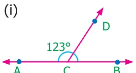
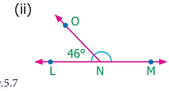
Fig.
Solution
- (i)Since the angles are linear pair, \(\angle ACD + \angle BCD = 180 ^{\circ}\)
\(123 ^{\circ} + \angle BCD = 180 ^{\circ}\)
Subtracting \(123 ^{\circ}\) on both sides
\(123 ^{\circ} + \angle BCD - 123 ^{\circ} = 180 ^{\circ} - 123 ^{\circ} \angle BCD = 57 ^{\circ}\)
- (ii)Since the angles are linear pair, \(\angle LNO + \angle MNO = 180 ^{\circ}\)
\(46 ^{\circ} + \angle MNO = 180 ^{\circ}\)
Subtracting \(46 ^{\circ}\) on both sides
\(46 ^{\circ} + \angle MNO - 46 ^{\circ} = 180 ^{\circ} - 46 ^{\circ} \angle MNO = 134 ^{\circ}\)
Example 5.5 Two angles are in the ratio 3:2. If they are linear pair, find them.
Solution
Let the angles be 3x and 2x Since they are linear pair of angles, their sum is \(180 ^{\circ}\) .
Therefore, \(3x+2x = 180 ^{\circ} 5x = 180 ^{\circ} x = \frac{180}{5} x = 36 ^{\circ}\)
The angles are \(3x = 3 \times 36 = 108 ^{\circ}\)
\(2x = 2 \times 36 = 72 ^{\circ}\)
More on linear pairs
Amudhan asked his teacher what would happen if he drew a ray in between a linear pair of angles? The teacher told him to draw it. Amudhan drew the ray as shown in Fig.5.8. Teacher asked Amudhan, "what can you say about the angles
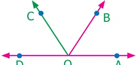
\(\angle AOB\) and \(\angle\) BOC?". He said that they are adjacent angles. Also it is true that \(\angle AOB + \angle BOC = \angle AOC\). The teacher also asked about the pair of angles \(\angle AOC\) and \(\angle COD\). He replied that they are linear pair. Therefore, their sum is \(180 ^{\circ}\) i.e. \(\angle AOC + \angle COD = 180 ^{\circ}\) . Combining these two results we get \(\angle AOB + \angle BOC + \angle COD = 180 ^{\circ}\) . Thus, the sum of all the angles formed at a point on a straight line is \(180 ^{\circ}\) .
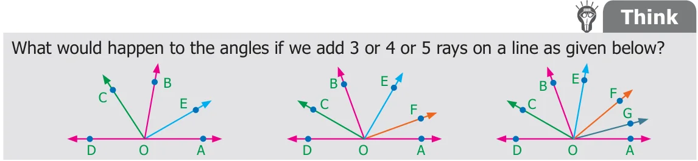
We can learn one more result on linear pairs. Observe the following Fig.5.9. AB is a straight line. OC is a ray meeting AB at O. Here, \(\angle AOC\) and \(\angle BOC\) are linear pair. Fig. Hence \(\angle AOC + \angle BOC = 180 ^{\circ}\) Also, OD is another ray meeting AB at O. Again \(\angle AOD\) and \(\angle BOD\) are linear pair. Hence \(\angle AOD + \angle BOD = 180 ^{\circ}\) Now, \(\angle AOC\), \(\angle BOC\), \(\angle AOD\) and \(\angle BOD\) are the angles that are formed at the point O. We can observe that ( \(\angle AOC + \angle\) BOC) + ( \(\angle AOD + \angle\) BOD) \(= 180 ^{\circ} + 180 ^{\circ} = 360 ^{\circ}\) . So, the sum of all angles at a point is \(360 ^{\circ}\) .
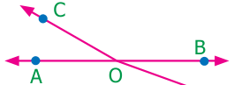
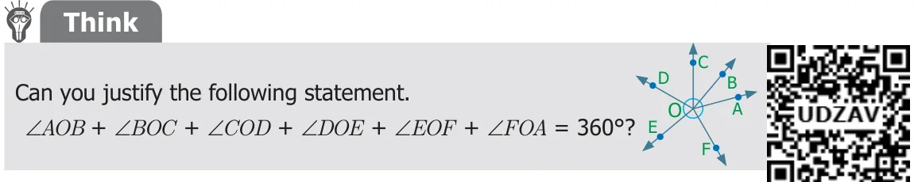
Example 5.6 From Fig.5.10, find the measure of \(\angle ROS\).
Solution
We know that \(\angle QOR + \angle ROS + \angle SOP = 180 ^{\circ}\)
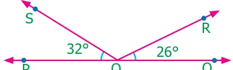
\(26 ^{\circ} + \angle ROS + 32 ^{\circ} = 180 ^{\circ} \angle ROS + 58 ^{\circ} = 180 ^{\circ}\)
Subtracting \(58 ^{\circ}\) on both sides We get, \(\angle ROS = 180 ^{\circ} - 58 ^{\circ} = 122 ^{\circ}\) Example 5.7 In Fig. 5.11, find the value of \(x ^{\circ}\)
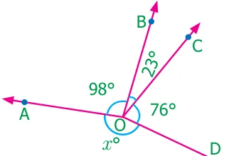
Solution \(98 ^{\circ} + 23 ^{\circ} + 76 ^{\circ} + x ^{\circ} = 360 ^{\circ} 197 ^{\circ} + x ^{\circ} = 360 ^{\circ} x ^{\circ} = 360 ^{\circ} - 197 ^{\circ} = 163 ^{\circ}\)
5.2.3 Vertically opposite angles
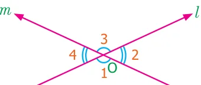
We have already studied about intersecting lines. Observe the Fig.5.12. There are two lines namely l and m which are intersecting at a point O and forming four angles at that point Fig.5.12 of intersection. They are \(\angle 1\), \(\angle 2\), \(\angle 3\) and \(\angle 4\).
Consider any one angle among this say \(\angle 1\). The angles which are adjacent to \(\angle 1\) are \(\angle 2\) and \(\angle 4\), \(\angle 3\) is a non-adjacent angle. Similarly, for the remaining three angles two angles will be adjacent and one angle will be non-adjacent. We can observe that an angle and its non-adjacent angle are just opposite to each other at the point of intersection O (vertex). Such angles which are opposite to each other with reference to the vertex are called vertically opposite angles. When two lines intersect each other, two pairs of non-adjacent angles formed are called vertically opposite angles.
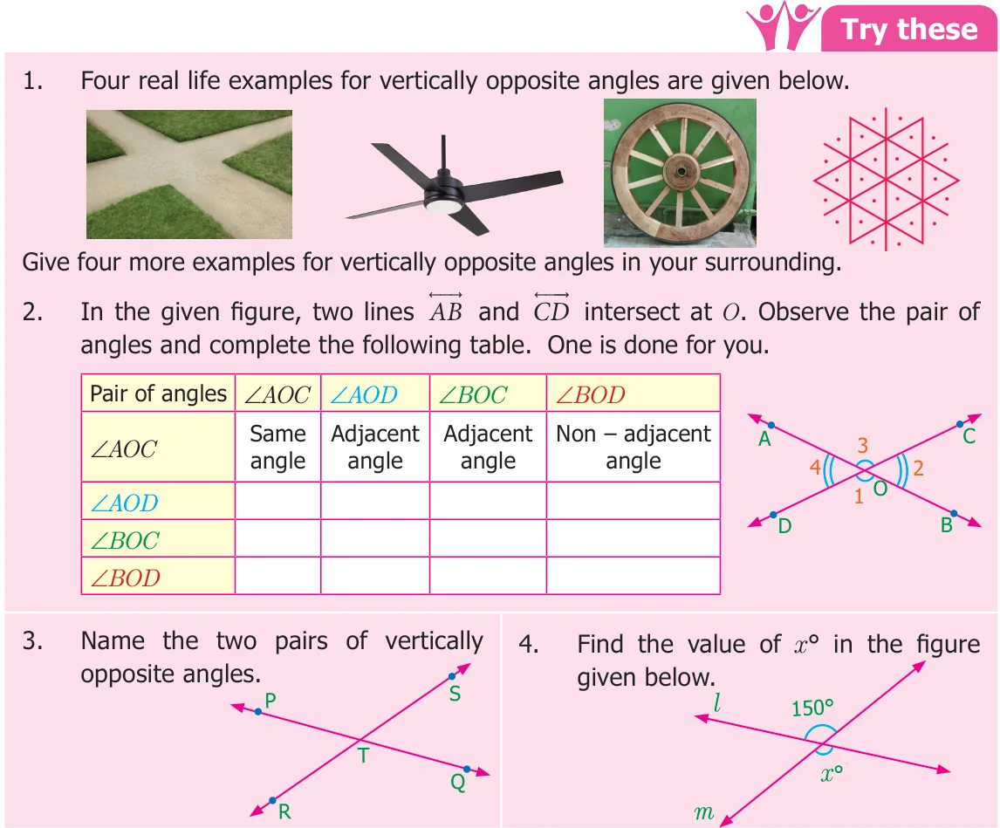
On a paper draw two intersecting lines AB and O. Label the two pairs of vertically opposite angles as \(\angle 1\), \(\angle 2\) and trace of angles \(\angle 2\) and \(\angle 3\). Place the traced angle \(\angle 2\) on angle \(\angle\) Place the traced angle \(\angle 3\) on angle \(\angle 4\). Are they equal? Continue the same for five different pair of intersecting lines. Record your observations and discuss.